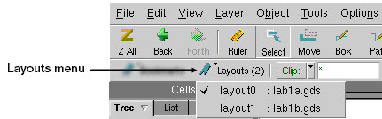

Running Calibre
DESIGNrev in interactive GUI mode provides you with an interface
for viewing and manipulating your layout files.
Procedure
- Use either of the following
methods to invoke the Calibre DESIGNrev layout viewer in interactive
GUI mode:
- Choose .
This displays the Choose Layout
Files dialog box.
Note: In many cases, there are multiple ways (in addition to
choosing a menu path as described above) that you can access a dialog
box. For example, you can use either of the following methods to
access the Choose Layout Files dialog box:
- Keyboard shortcut: Ctrl+o
- Menu accelerator: Press F10 to display the File menu
and then press “o”
- Browse to and choose a GDS
or OASIS file and then click Open.
- Familiarize yourself with
the major components of the GUI as shown in Figure 1.
- Use one of the methods described
in step 2 to open a second
layout file.
- Use the Layouts menu located in the Session
Toolbar to switch between multiple layouts that are open in the
GUI.
Figure 1. Layouts
Menu
The name of the current layout
appears in the Status Toolbar located at the bottom of the Calibre
DESIGNrev GUI. The string “(HC)” appears after the layout name if
you opened the layout in High Capacity mode.
The layout viewer places no
limit on the number of layout databases you can load into the application.
- Use the Cells Browser to review
the hierarchy of the layout. For example:
If the layout is hierarchical,
the top cell should appear at the top of the hierarchy. The top
cell refers to the parent of all cells in the design hierarchy.
- Choose a cell in the hierarchy
to display it in the Layout Viewing Area.
- Right-click a cell name and
review the available options in the Cell popup menu.
- In the Find Object Toolbar,
choose an object type (for example, Geom) from the dropdown list
and click the arrow buttons to go to an instance of the object type.
- Practice selecting different
object types in the Object Selection Toolbar and then selecting
objects in the layout.
- Choose an object in the layout
and right-click to display a context-sensitive popup menu. Notice
the popup menu contains options relevant to the currently selected
object. For example, the popup menu for a selected polygon object
contains the following items:
- Double-click a layer in the
Layers Browser to hide the layer in the layout.
- Double-click
the same layer to display it.
- Right-click a layer in the
Layers Browser to display a context-sensitive popup menu and review
the menu options.
- In the Layers palette, select
a layer and then experiment with using the Colors and Fill palette
to change the color and fill pattern for the selected layer.
- Choose to display
the Rulers palette.
- Click the Ruler button in the Layout Viewer
Toolbar and practice drawing a ruler in the layout.
The Rulers palette updates to display information about the new
ruler. For example:
- Choose .
- Click Discard when prompted to save changes.
- Click OK to exit Calibre DESIGNrev.